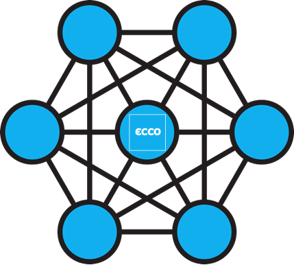

Quem Somos?
O Núcleo de Investigação e Cooperação Empresarial é um núcleo fundado por seis alunos dos cursos de Engenharia Mecânica, Eletrotécnica e Computadores e Informática, cujo objetivo visa a inserção de alunos em projetos desenvolvidos em seio empresarial.
A Nossa Missão?
Usar os problemas reais das empresas para aprendizagem e aquisição de competências - em grande e destacado
A maior parte dos projetos desenvolvidos pelos estudantes da FEUP em seio empresarial são realizados com start-ups, o que faz com que eles se restrinjam a um conjunto muito restrito de áreas do conhecimento. Com este núcleo, pretendemos estender essa oportunidade a todas as vertentes de engenharia lecionadas na nossa faculdade, oferecendo assim a primeira experiência profissional que em termos práticos será equivalente a um estágio, mas com a duração de um ano e em paralelo com as aulas, permitindo deste modo um intercâmbio de conhecimentos entre Faculdade e mundo empresarial. Estes projetos contarão igualmente com a colaboração de docentes.

Multidisciplinaridade